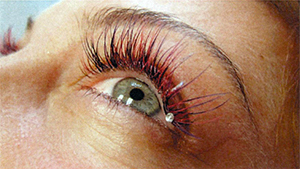
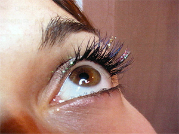
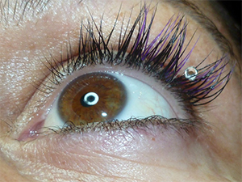

Des yeux envoutants au quotidien
(sans ajout de mascara)
STAR CIL C'EST AUSSI :
Les cils de couleurs (couleurs disponibles : Bleu nuit, Vert et Mauve)

Les paillettes minérales

Le Strass de Swaroski

LA TECHNIQUE UTLISEE PAR STAR CIL
C'est coller un cil synthétique sur un cil naturel, sans contact avec l'épiderme.
Vos yeux sont précieux. Nous garantissons des produits de qualité et une procédure sécuritaire. En fonction de l'effet recherché, naturel ou sophistiqué, la professionnelle choisira avec vous l'épaisseur, la longueur et la couleur désirée en respectant votre cil naturel (pour le succès de la pose).
L'extension de cil restera collée sur le cil naturel jusqu'à ce que celui-ci tombe quand il est en fin de cycle de vie.
Aucune contrainte au quotidien : les extensions de cils résistent à l'eau, et s'adaptent à toutes vos activités (piscine, hammam...)!
Tous les produits professionnels et à la vente de la marque Osé ont fait l'objet d'un dépôt de formules auprès des principaux centres antipoison. |